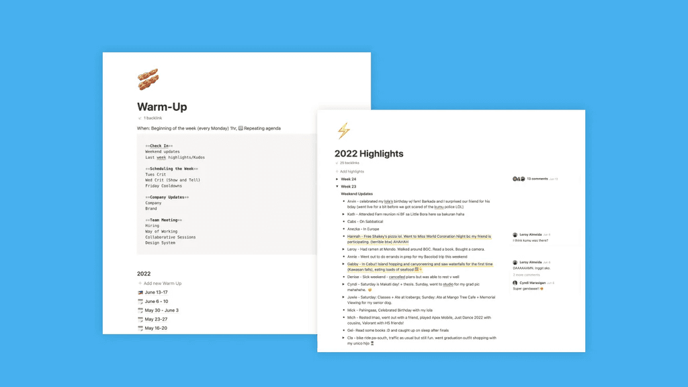
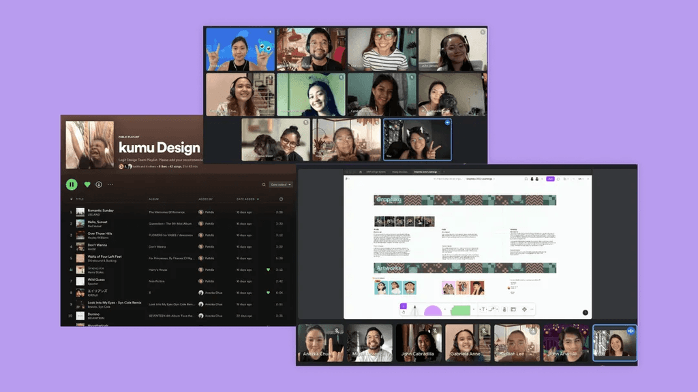
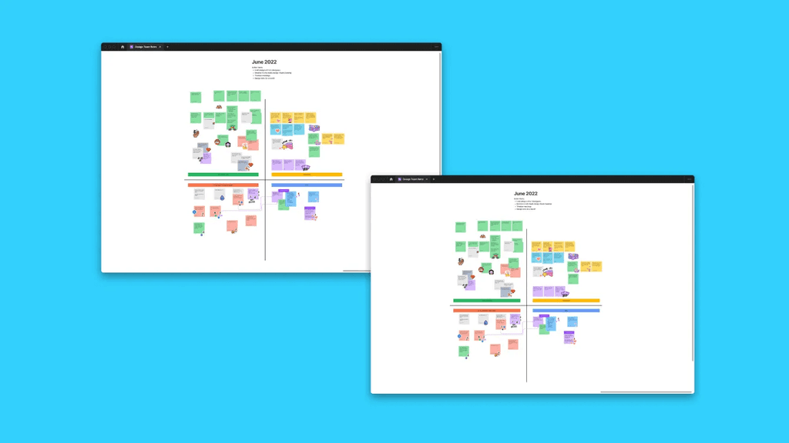
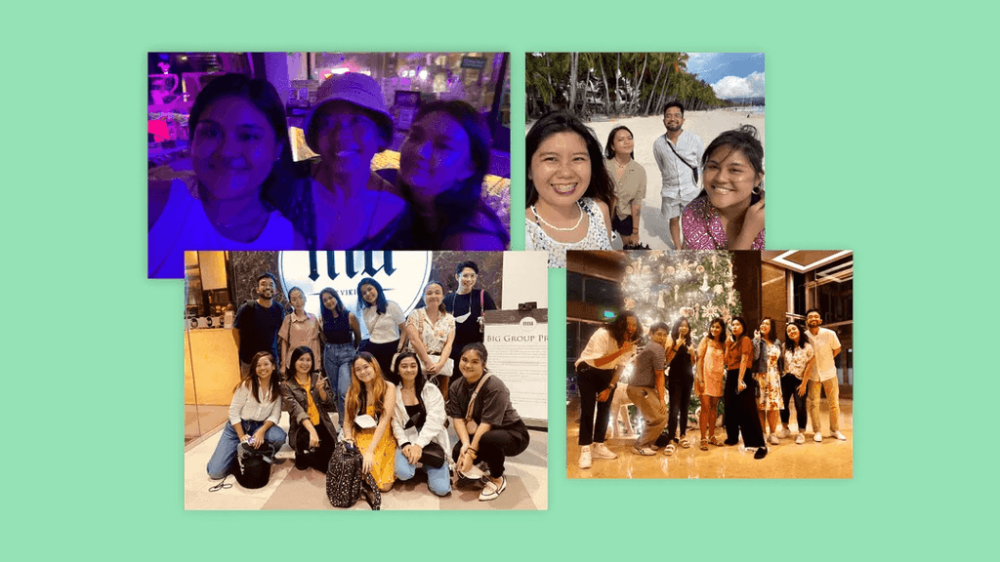

Inside Kumu: The Product Design Team's Process
A look at the meetings, rituals, and exercises our product design team relies on to build trust and stay efficient

A design team runs on trust and communication. These are the meetings and rituals that built trust on the Kumu Product Design team and kept us connected and efficient.
How the team is set up
- Kumu is a remote-first company. The design team works fully remotely, so most of this is about staying effective (and sane) while remote.
- This is the “design team” process, not the “product team” process. Kumu product designers belong to two teams. The horizontal “design team” keeps the product consistent and the quality bar high. The vertical “product team”, which we call a “pod”, ships product improvements and builds expertise in a focused area.
Daily: async stand-ups
"Stand-up" or Status Updates
- Who: Product designers
- What: Each designer posts what they worked on yesterday and what they're doing today
- When: Every Tuesday to Friday, 9:30 am
- Why: To know what others are working on and spot anyone who is blocked
This is our only daily ritual. It used to be a 15-minute call, but as the team grew it took too long. Slack updates work better and leave a record of the past few weeks.

Weekly: warm-up, critique and cooldown
Warm-Up
- Who: Product designers
- What: Kick off the week together
- When: Every Monday, 1:00–2:00 pm
- Why: To ease into the work week with something light and fun
The hour is split into four 15-minute parts:
- Weekend update: Everyone shares a weekend highlight, each person nominating the next.
- Tasks and blockers: We check the kanban board to see if anyone is blocked or overloaded.
- Critique and meeting schedule: We plan the week's critiques and meetings in Notion, and each person says if they have work to bring to critique.
- Announcements: Company news and design team updates: brand alignment, design system changes, policies and hiring.
Design Critique
- Who: Product designers, plus any guests the presenter invites (e.g., their PM, tech lead, researcher)
- What: Go through the designs submitted for critique on Tuesday
- When: Every Wednesday from 10:30–12:00 pm
- Why: To move projects along, help anyone who's stuck, and share context with the team
Critiques at Kumu are not product reviews. They aren't for pitching new ideas or making roadmap decisions. They're a safe space for feedback, focused on unblocking problems, raising quality, keeping the product consistent and sharing context.
Cooldown
- Who: Product designers
- What: Wrap up the week
- When: Every Friday 4:00–5:00 pm
- Why: To hang out and relax
Remote teams don't get water-cooler chats, so hangout time has to be planned. It's where we bond, which builds trust. We usually do one of three things: Play, Learn, or Chat.

Monthly and quarterly: retros and offsites
Retrospectives
- Who: Product designers
- What: Review our current processes and team-wide responsibilities
- When: Twice a month, every other Thursday
- Why: To make space for feedback on our processes and our team
Offsites
- Who: Product designers (and interns)
- What: A full day of activities outside the office
- When: Quarterly
- Why: To learn, bond, and (maybe) brainstorm
We do two kinds of team-building offsites: one with the design team and one with the product teams.
